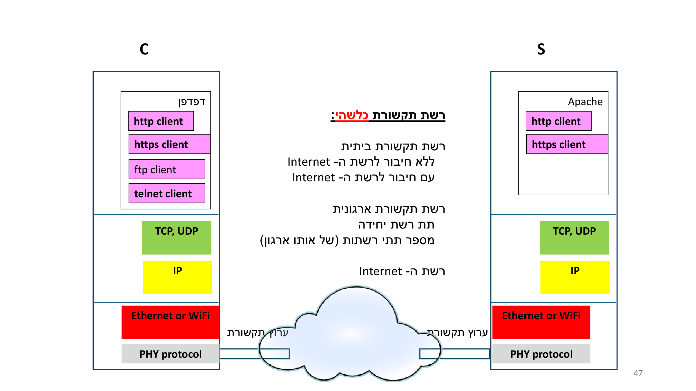
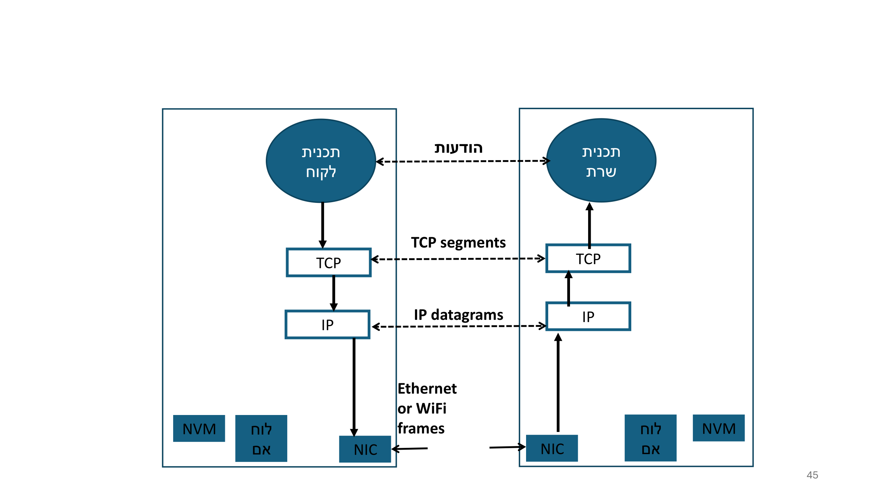
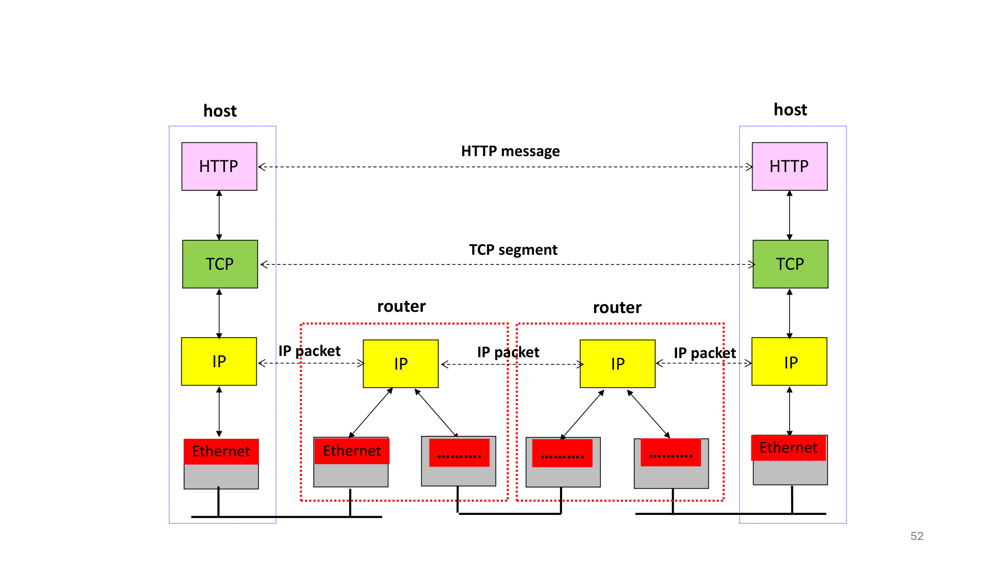

שכבות, ה-TCP/IP Stack ו-Encapsulation
⏱ זמן משוער: 40 דק'
מה נלמד כאן, ולמה זה חשוב למתכנת
במודול הקודם פתחנו את ה"קופסא השחורה" של הרשת וראינו את המסע של הודעת HTTP מהדפדפן ועד ל-NIC. עכשיו אנחנו נותנים לתמונה הזו שם ומבנה: עקרון ה-layering. אם אתה בא מעולם התוכנה — חשוב על זה בדיוק כמו שכבות הפשטה (abstraction layers) בקוד: כל שכבה משתמשת בשירות של השכבה שמתחתיה, מספקת שירות לשכבה שמעליה, ומסתירה את פרטי המימוש שלה.
המרצה בונה את המודל הזה שלב-אחר-שלב על שני hosts — לקוח משמאל ושרת מימין — ומוסיף בהדרגה את השכבות ביניהם. במודול הזה נכסה: איך מתארגן ה-TCP/IP stack, מה כל שכבה עושה, איך אותה שכבה בשני הצדדים "מדברת" זו עם זו, ובעיקר — מהו encapsulation.
מקור: syllabus.pdf; L01-2 v2, שקפים 40–52
ה-TCP/IP Stack — חמש שכבות, ממוספרות הפוך
המרצה מצייר את המחסנית המלאה בשני הקצוות (C ו-S) זה מול זה, כשביניהם "רשת תקשורת כלשהי". שימו לב למספור של המרצה: אצלו Application היא שכבה 5 ואילו PHY היא שכבה 1 — כלומר סופרים מלמטה למעלה, וה-App בפסגה.
ה-TCP/IP stack אצל המרצה, מלמעלה למטה, עם קוד הצבעים שלו:
- שכבה 5 — Application (ורוד): בתוך ה-browser יושבים http client, https client, ftp client, telnet client. בצד השרת המרצה מצייר את Apache כמכיל את ה-clients האלה.
- שכבה 4 — Transport (ירוק): TCP ו-UDP.
- שכבה 3 — Network / IP (צהוב): IP.
- שכבה 2 — Link (אדום): Ethernet or WiFi.
- שכבה 1 — PHY protocol (אפור) → ה-ערוץ תקשורת הפיזי.

🎓 הרחבה — לא נדרש למבחן: OSI מול TCP/IP
הסילבוס מבטיח השוואה בין "מודל 7 השכבות (OSI)" ל-TCP/IP, אבל בשקפים של האשכול הזה המרצה מציג רק את מחסנית ה-TCP/IP ולא מפרט את שמות 7 שכבות ה-OSI. לכן אל תסתמכו כאן על "7 השכבות" מזיכרון חיצוני — בחומר שסופק ההשוואה מוצהרת אך דלה. (במילון מצוין ש-TCP/IP "ניצח" כי OSI היה מורכב מדי ונשאר "על הנייר".)
מקור: L01-2 v2, שקפים 47–51; syllabus.pdf
איפה כל שכבה "יושבת" בתוך ה-host
מנקודת מבט של מתכנת, שווה לשים לב איפה בפועל רץ הקוד של כל שכבה. המרצה מצייר host כקופסה שבתחתיתה שלושה בלוקים כחולים: NVM, לוח אם (motherboard) ו-NIC — ומהן יוצא הערוץ הפיזי.
- ה-NIC מותאם לסוג הערוץ הפיזי (קווי-חשמלי / אלחוטי / קווי-אופטי) ומבצע את ההמרה לאות פיזי. אצל המרצה שכבות 1–2 ממומשות בו.
- לוח האם כולל (כשיחידת הקצה היא מחשב) multi-core CPU, MM (main memory) ו-buses.
- ה-ערוץ הפיזי הוא שדרכו המידע עובר באמת — פיזית ולא לוגית! באמצעות גלים אלקטרו-מגנטיים או גלי אור; קווי (כבל / סיב אופטי) או אלחוטי (= האוויר).
מקור: L01-2 v2, שקפים 12–15
אותה שכבה מדברת עם אותה שכבה — ושמות ה-PDU
הרעיון המרכזי שהמרצה בונה עליו את כל המודול: כל שכבה בצד אחד "מדברת" עם אותה שכבה בדיוק בצד השני (same-layer talks to same-layer). זו שיחה לוגית, אופקית, מעל השכבות שמתחת. וזה חשוב במיוחד — לכל שכבה יש שם משלה ליחידת הנתונים שלה (PDU).
המרצה מסמן את ההחלפות האופקיות בכל שכבה כך (יש לזכור בעל-פה):
- Application ↔ Application: message (הודעות).
- TCP ↔ TCP: TCP segment.
- IP ↔ IP: IP datagram (= IP packet).
- Link ↔ Link: Ethernet or WiFi frame.

מקור: L01-2 v2, שקפים 41–45
Encapsulation — עטיפת הנתונים בירידה במחסנית
עכשיו הלב של המודול. כשההודעה יורדת מ-Application כלפי מטה, כל שכבה עוטפת את מה שקיבלה מלמעלה בכותרת (header) משלה. זה בדיוק encapsulation: השכבה שמתחת לא "מבינה" את התוכן שקיבלה — היא פשוט מתייחסת אליו כ-payload, מוסיפה לו את הכותרת שלה, ומעבירה הלאה.
שרשרת העטיפה, שלב-אחר-שלב:
- שכבת ה-Application מייצרת message (למשל הודעת http request message).
- TCP עוטף אותה בכותרת TCP → segment.
- IP עוטף את ה-segment בכותרת IP → datagram (במרצה: ב-IPv4 מודגמת תוספת IP header לפני ה-TCP header).
- שכבת ה-Link עוטפת את ה-datagram → frame (Ethernet או WiFi), כולל כתובות MAC ובדיקת שגיאות.

מקור: L01-2 v2, שקף 52
הנתיב דרך ה-routers: end-to-end מול hop-by-hop
הדיאגרמה הקנונית (שקף 52) — המועמדת הטובה ביותר לוויזואל אינטראקטיבי — מציגה שני hosts בקצוות ושני routers באמצע. ה-host מריץ את כל המחסנית: HTTP (ורוד) → TCP (ירוק) → IP (צהוב) → Ethernet (אדום). אבל ה-router מגיע רק עד שכבת IP: הוא מסיים את שכבת הקישור בכל צד ומעביר (forwards) ברמת ה-IP.
הלקחים שהמרצה תופס בדיאגרמה הזו (שווים זהב למבחן):
- HTTP message ו-TCP segment הם end-to-end — קיימים רק ב-hosts, ומדברים ישירות בין שני הקצוות.
- IP packet נבחן מחדש hop-by-hop: הוא מופיע 3 פעמים לאורך 3 ה-hops (host↔router, router↔router, router↔host).
- שכבת ה-Link משתנה בין hop ל-hop: Ethernet על קישור אחד, ו-"…………" (סוג link אחר) על הקישור הבא. כל router "מסיים" את ה-link בכל צד.
מקור: L01-2 v2, שקף 52
מהביטים לאות פיזי — DTA ו-ATD
בתחתית המחסנית, ה-NIC צריך לשלוח את הביטים פיזית דרך הערוץ. לשם כך הוא מייצר carrier signal — גל אלקטרו-מגנטי מתאים ש"נושא" את הביטים. לפני כן, כל הבתים של ההודעה מחולקים ונארזים ליחידות נתונים הנקראות packets.
שתי ההמרות ב-NIC, בנוטציה של המרצה (שמרו על האותיות שלו):
- בצד השולח: המרת הבתים לאות אנלוגי → DTA (Digital To Analog).
- בצד המקבל: המרת הגל האנלוגי בחזרה לייצוג בינארי (bits) → ATD (Analog To Digital).
מקור: L01-2 v2, שקפים 31–34
Packet switching — שיטת ההעברה של רשתות מחשבים
למה בכלל מחלקים ל-packets? העברת מידע בין שני hosts כרוכה לרוב בהמון בתים (אלפים, עשרות אלפים, מיליונים — העלאת קובץ לאתר הקורס, הורדה, זרם וידאו של Zoom, זרם קול). ברשתות מחשבים לא שולחים את הכול "במכה אחת", אלא מחלקים ל-packets.
- כל packet הוא לכל היותר < 2000 בתים. (למה? יש סיבות טובות — "יורחב בהמשך".)
- שיטת העברת המידע ברשתות מחשבים נקראת packet switching — לזכור את המונח וההגדרה.
- מכיוון שרשתות מחשבים תוכננו מלכתחילה ל-packet switching, גם ה-NICs תוכננו ונבנו כדי להעביר packets.
🎓 הרחבה — לא נדרש למבחן: circuit switching ורשת הטלפון
כדי להראות ש-packet switching אינו האפשרות היחידה: רשת הטלפון הקווית מעבירה קול בשיטה אחרת — circuit switching (מיתוג מעגלים). היא תוכננה עשרות שנים לפני רשתות המחשבים הראשונות, לנשיאת קול אנושי (ומאוחר יותר תמונות/פקס); יחידות הקצה שלה הן טלפונים. שם זרם הקול לא מחולק ל-packets — הוא עובר "כמכלול". השקף הזה מסומן אצל המרצה בכובע-סיום (🎓), כלומר לא חומר מבחן.
מקור: L01-2 v2, שקפים 35–37
וידאו — TCP/IP Model ו-Encapsulation
דוגמאות פתורות
דוגמה 1 — מיפוי שכבה ל-PDU. לאיזו שכבה שייכת כל אחת מהיחידות: segment, frame, message, datagram?
- message ← Application (שכבה 5).
- segment ← TCP (שכבה 4).
- datagram (= IP packet) ← IP (שכבה 3).
- frame ← Link / Ethernet-WiFi (שכבה 2).
מקור: L01-2 v2, שקפים 41–45
דוגמה 2 — encapsulation, סדר העטיפה. הודעת Application יורדת במחסנית עד לחוט. באיזה סדר נעטפות הכותרות, ומה השם של היחידה בכל שלב?
מלמעלה למטה, כל שכבה עוטפת את מה שקיבלה מהשכבה שמעליה:
- message (Application).
- TCP מוסיף TCP header → segment.
- IP מוסיף IP header → datagram (ב-IPv4: IP header לפני ה-TCP header).
- Link מוסיף כותרת (וכתובות MAC + בדיקת שגיאות) → frame (Ethernet או WiFi).
רק אז ה-NIC מבצע DTA ושולח כ-carrier signal.
מקור: L01-2 v2, שקפים 31–34, 52
דוגמה 3 — עד איפה מגיע router? בנתיב host → router → router → host, עד איזו שכבה מטפל כל router, ואילו יחידות הן end-to-end לעומת hop-by-hop?
ה-router מגיע רק עד שכבה 3 (IP) — הוא מסיים את שכבת ה-Link בכל צד ומעביר (forwards) ברמת IP.
- end-to-end (רק ב-hosts): HTTP message ו-TCP segment.
- hop-by-hop: IP packet — מופיע 3 פעמים לאורך 3 ה-hops.
- שכבת ה-Link מתחלפת בכל hop (Ethernet על אחד, סוג אחר על הבא).
מקור: L01-2 v2, שקף 52
דוגמה 4 — כמה packets? נניח שהמרצה מגדיר packet כלכל היותר < 2000 בתים, ורוצים לשלוח הודעה של 5000 בתים. מהו מספר ה-packets המינימלי (בהנחת גודל מרבי של 2000 לצורך התרגיל)?
⌈5000 / 2000⌉ = 3 packets (שניים בני 2000 ואחד בן 1000).
הערה: המרצה נותן דוגמה של הודעת http בת ~1300 בתים; פה השתמשנו רק בכלל ה-"< 2000 בתים לכל packet" כדי לתרגל את החלוקה.
מקור: L01-2 v2, שקפים 30, 35
בדיקה עצמית
לפי המספור של המרצה, איזו שכבה היא שכבה 5 ואיזו היא שכבה 1?
מהו השם הנכון של ה-PDU בשכבת ה-IP?
בדיאגרמת שקף 52, אילו יחידות הן end-to-end (קיימות רק ב-hosts)?
עד איזו שכבה "מטפל" router לפי המרצה?
מהי ההמרה שה-NIC של הצד השולח מבצע כדי לשלוח את הביטים בערוץ?
כיצד נקראת שיטת העברת המידע של רשתות מחשבים, ומה גודלו המרבי של packet לפי המרצה?